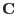
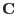

It is known (see eg [1]) that the ML estimator  as defined in equation 1 behaves approximately like
as defined in equation 1 behaves approximately like  , but with an additive offset that varies with the nature of the fitting function. The variance matrix of the fitted model parameters can therefore be obtained (see [1] again, chapter 8) from twice the inverse of the Hessian or curvature matrix  which is defined in equation 3.
, but with an additive offset that varies with the nature of the fitting function. The variance matrix of the fitted model parameters can therefore be obtained (see [1] again, chapter 8) from twice the inverse of the Hessian or curvature matrix  which is defined in equation 3.